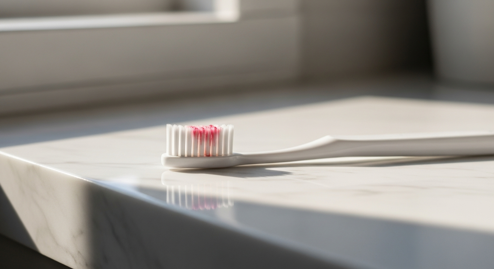
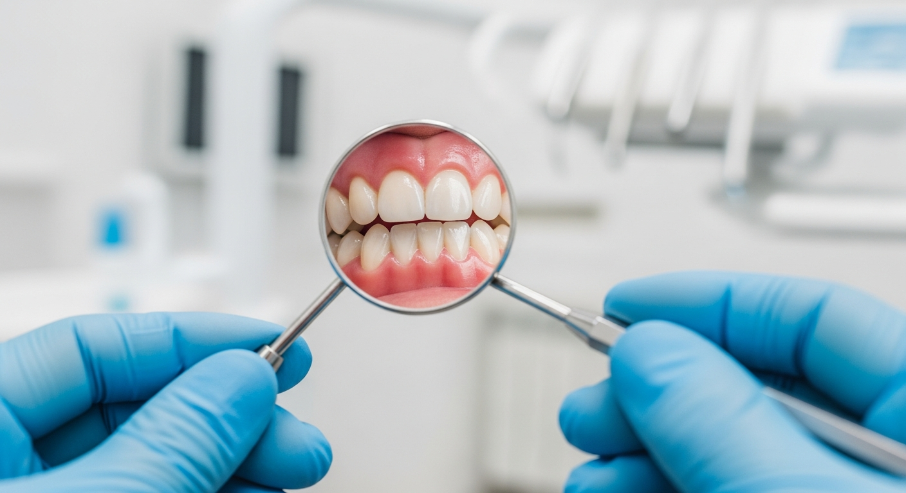
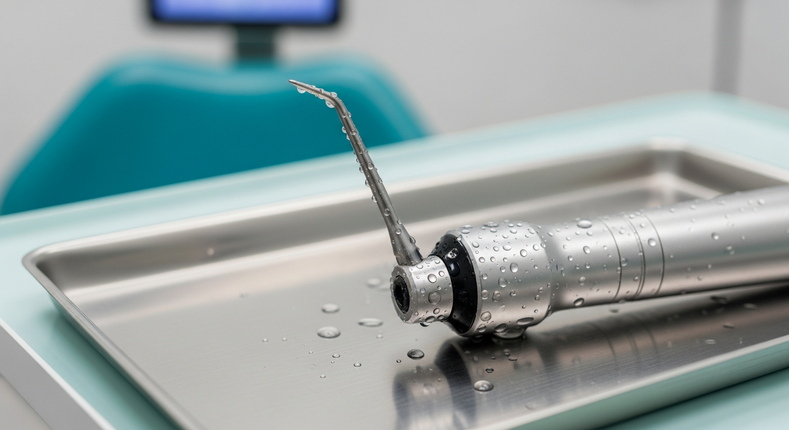
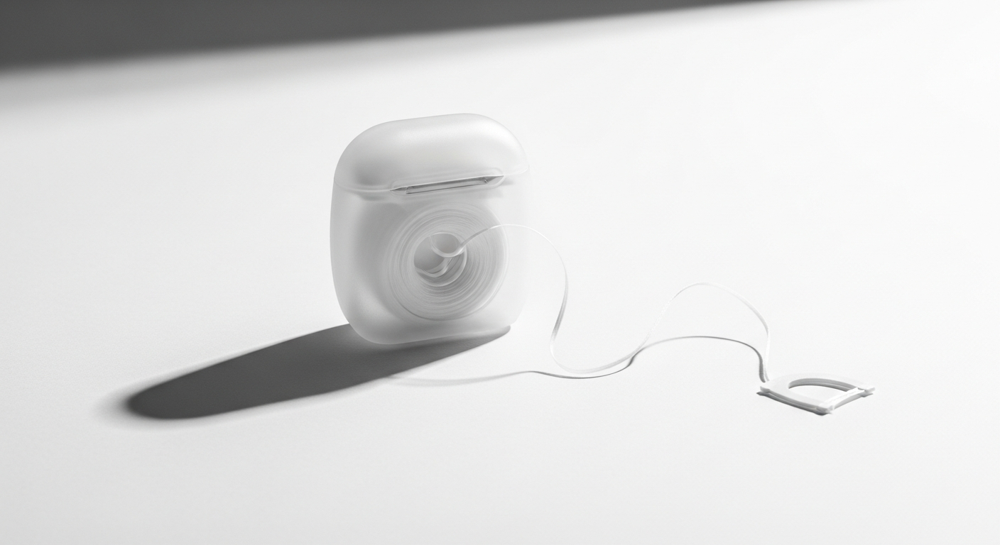
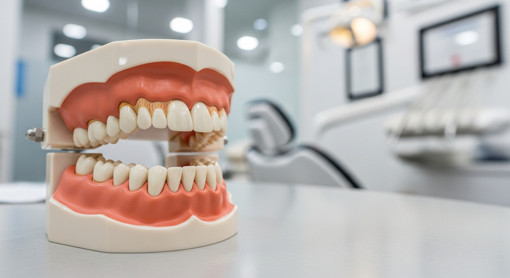

잇몸 출혈이 반복된다면
간단한 검진으로 상태를 확인해 보세요
초기에 발견하면 스케일링만으로 회복할 수 있습니다.
부담 없이 상담받아보세요.
031-546-0051 | 평일 09:30~18:30 / 토 09:30~14:30
잇몸 출혈 | 잇몸에서 피 | 치주질환 | 잇몸병 초기 증상
양치할 때 잇몸에서 피가 묻어 나온 경험, 한 번쯤 있으실 겁니다. "칫솔이 너무 센가?" 하고 넘기기 쉬운데, 반복되는 잇몸 출혈은 치주질환의 대표적인 초기 신호입니다.
국민건강영양조사에 따르면 성인 10명 중 3명 이상이 치주질환을 가지고 있으며, 40대 이상에서는 절반에 가까운 수치입니다. 잇몸병은 초기에 통증이 거의 없기 때문에 출혈이라는 신호를 놓치면 치아를 잃는 단계까지 진행될 수 있습니다. 이 글에서는 잇몸병 초기 증상의 원인부터 치료 시기, 예방법까지 체계적으로 정리했습니다.

양치 후 칫솔에 피가 반복적으로 묻어 나온다면 치과 검진이 필요합니다
잇몸 출혈은 단순히 칫솔 때문만이 아닙니다. 원인을 정확히 파악해야 적절한 대처가 가능합니다.
1. 치태(플라크) 축적
가장 흔한 원인입니다. 양치 후에도 제거되지 않은 치태가 잇몸 경계에 쌓이면 세균이 번식하고, 잇몸에 염증 반응을 일으킵니다. 이 상태가 치은염이며, 잇몸 출혈의 가장 대표적인 원인입니다.
2. 치석
치태가 2~3일 내에 제거되지 않으면 타액의 칼슘 성분과 결합하여 치석으로 굳어집니다. 치석은 칫솔질로는 제거할 수 없고, 치과에서 스케일링을 받아야만 합니다. 치석 주변의 잇몸은 지속적으로 자극을 받아 출혈이 발생합니다.
3. 잘못된 양치 습관
너무 강한 힘으로 양치하거나 딱딱한 칫솔모를 사용하면 잇몸 조직이 손상될 수 있습니다. 다만 올바른 양치법을 사용하는데도 출혈이 있다면 양치 방법의 문제보다는 잇몸 염증을 의심해야 합니다.
4. 호르몬 변화
임신 중이거나 사춘기, 폐경기에는 호르몬 변화로 잇몸이 예민해질 수 있습니다. 특히 임신성 치은염은 임산부의 약 60~75%에서 나타나는 것으로 보고됩니다.
5. 전신 질환 및 약물
당뇨병은 잇몸 질환의 위험을 2~3배 높입니다. 또한 혈액 희석제(아스피린, 와파린 등)를 복용하는 경우에도 출혈이 쉽게 발생할 수 있습니다.
잇몸병 초기 증상은 통증보다 눈에 보이는 변화로 먼저 나타납니다. 아래 증상 중 2개 이상 해당되면 치과 검진을 받아보는 것이 좋습니다.
치주질환 자가 체크리스트
- 양치할 때 잇몸에서 피가 난다
- 잇몸이 빨갛게 부어 있다
- 잇몸을 누르면 피나 고름이 나온다
- 입 냄새가 심해졌다
- 치아 사이가 벌어진 느낌이 든다
- 찬물이나 찬 공기에 이가 시리다
- 음식을 씹을 때 치아가 흔들리는 느낌이 있다

치과 거울을 이용한 잇몸 상태 검진
치주질환은 크게 치은염과 치주염으로 나뉩니다. 치은염은 잇몸에만 염증이 있는 상태이고, 치주염은 잇몸뼈까지 파괴가 진행된 상태입니다.
| 단계 | 상태 | 주요 증상 | 치료 방법 |
|---|---|---|---|
| 1단계: 치은염 | 잇몸에만 염증 | 출혈, 부기, 붉어짐 | 스케일링 + 올바른 양치 |
| 2단계: 초기 치주염 | 잇몸뼈 흡수 시작 | 잇몸 퇴축, 구취 | 치근활택술(잇몸 속 스케일링) |
| 3단계: 중등도 치주염 | 잇몸뼈 30~50% 소실 | 치아 흔들림, 고름 | 치주 수술 + 재생 치료 |
| 4단계: 중증 치주염 | 잇몸뼈 50% 이상 소실 | 심한 동요, 자연 탈락 | 발치 후 임플란트 등 |
핵심은 1단계 치은염은 완치가 가능하다는 점입니다. 스케일링과 올바른 구강 관리만으로 건강한 잇몸으로 회복할 수 있습니다. 하지만 2단계 이상으로 진행되면 손실된 잇몸뼈는 자연 회복이 어렵습니다. 그만큼 조기 발견과 치료가 중요합니다.
치료 방법은 치주질환의 진행 정도에 따라 달라집니다.
스케일링은 치은염 단계에서 가장 기본적인 치료입니다. 치아 표면과 잇몸 경계에 붙은 치석을 초음파 기구로 제거합니다. 시술 시간은 약 20~30분이며, 건강보험 적용으로 연 1회 본인부담금이 약 1만 5천 원 수준입니다.

스케일링에 사용되는 초음파 기구
치근활택술(SRP)은 초기~중등도 치주염에 적용됩니다. 잇몸 아래 치아 뿌리에 붙은 치석과 오염된 조직을 제거하는 시술로, 부분 마취 후 진행합니다. 보통 2~4회에 걸쳐 구역을 나누어 치료합니다.
치주 수술은 중등도 이상의 치주염에서 필요합니다. 잇몸을 절개하여 깊은 곳의 치석과 염증 조직을 직접 제거하고, 필요한 경우 골이식이나 재생 치료를 병행합니다.
일상적인 습관이 잇몸 건강에 큰 영향을 미칩니다. 아래 요인에 해당되는 분은 정기 검진 주기를 더 짧게 가져가는 것이 좋습니다.
| 위험 요인 | 잇몸에 미치는 영향 | 위험도 |
|---|---|---|
| 흡연 | 잇몸 혈류 감소, 면역력 저하, 치주질환 위험 2~6배 증가 | 매우 높음 |
| 당뇨병 | 면역 반응 저하, 잇몸 치유 지연, 상호 악화 관계 | 매우 높음 |
| 스트레스 | 면역력 저하, 이갈이 유발, 구강 관리 소홀 | 높음 |
| 불규칙한 식습관 | 비타민 C 결핍 시 잇몸 출혈 증가, 당류 과다 섭취 | 중간 |
| 구호흡(입으로 숨쉬기) | 구강 건조 → 세균 번식 증가 → 잇몸 염증 촉진 | 중간 |
특히 흡연자는 잇몸 출혈이 잘 나타나지 않아 주의가 필요합니다. 니코틴이 잇몸 혈관을 수축시키기 때문에 출혈 없이도 치주질환이 심하게 진행되어 있는 경우가 있습니다. 흡연자라면 증상이 없더라도 6개월마다 정기 검진을 받는 것을 권장합니다.
치주질환 예방의 80%는 일상적인 구강 관리에서 결정됩니다. 올바른 양치법과 보조 도구 사용이 핵심입니다.
바스법(Bass Method)은 치과에서 가장 권장하는 양치법입니다. 칫솔모를 잇몸과 치아 경계에 45도 각도로 대고, 짧은 진동을 주듯 움직입니다. 잇몸 경계의 치태를 효과적으로 제거할 수 있는 방법입니다.
치실 사용은 양치만으로 닿지 않는 치아 사이 공간을 관리합니다. 칫솔만으로는 치아 표면의 약 60%밖에 닦을 수 없습니다. 하루 한 번, 특히 취침 전에 치실을 사용하면 치아 사이의 치태 축적을 크게 줄일 수 있습니다.

치실은 잇몸 출혈 예방에 필수적인 도구입니다
치간칫솔은 치아 사이가 넓은 부위에 효과적입니다. 치주 치료 후에는 잇몸이 내려가면서 치아 사이 공간이 넓어지는데, 이때 치간칫솔이 치실보다 더 효과적일 수 있습니다. 본인에게 맞는 크기를 치과에서 확인받는 것이 좋습니다.
모든 출혈이 당장 치과 치료를 필요로 하는 것은 아닙니다. 하지만 아래의 경우에는 가능한 빨리 치과를 방문하는 것이 좋습니다.
즉시 방문이 필요한 경우: 잇몸에서 고름이 나오는 경우, 치아가 눈에 띄게 흔들리는 경우, 잇몸이 심하게 부어오르면서 열이 나는 경우에는 빠른 치료가 필요합니다.
2주 이내 방문을 권장하는 경우: 양치 시 출혈이 1주일 이상 지속되는 경우, 잇몸이 붉게 부어 있는 경우, 입 냄새가 심해진 경우에는 치은염이 시작되었을 가능성이 있습니다.
정기 검진으로 관리하면 되는 경우: 가끔 양치 시 소량의 출혈이 있으나 다른 증상이 없는 경우에는 다음 정기 검진 때 확인하면 됩니다.

건강한 잇몸(분홍색)과 염증이 있는 잇몸(붉은색) 비교
Q. 스케일링을 받으면 치아 사이가 벌어지나요?
스케일링이 치아 사이를 벌리는 것이 아닙니다. 치석이 치아 사이를 메우고 있다가 제거되면서 원래 있던 공간이 드러나는 것입니다. 치석을 그대로 두면 잇몸뼈가 계속 파괴되어 결국 더 큰 문제로 이어집니다.
Q. 잇몸에서 피가 나면 양치를 하지 말아야 하나요?
오히려 반대입니다. 출혈이 있더라도 부드러운 칫솔로 정확한 방법으로 양치해야 합니다. 출혈의 원인인 치태를 제거해야 염증이 가라앉기 때문입니다. 다만 너무 강한 압력은 피하고, 바스법으로 잇몸 경계를 부드럽게 닦아주는 것이 좋습니다.
Q. 치주질환은 완치가 되나요?
치은염(1단계)은 적절한 치료와 관리로 완치가 가능합니다. 하지만 치주염(2단계 이상)은 이미 소실된 잇몸뼈의 완전한 회복이 어렵습니다. 치료를 통해 진행을 멈추고 현재 상태를 유지하는 것이 목표가 됩니다. 그래서 초기 발견이 무엇보다 중요합니다.
Q. 스케일링은 얼마나 자주 받아야 하나요?
건강보험 적용으로 만 19세 이상 성인은 연 1회 스케일링을 받을 수 있습니다. 일반적으로 6개월~1년에 한 번 받는 것이 권장되며, 치주질환 이력이 있거나 치석이 잘 생기는 분은 3~4개월 간격이 적절할 수 있습니다. 본인에게 맞는 주기는 치과 상담을 통해 확인하시는 것이 좋습니다.
Q. 잇몸약이나 잇몸 영양제가 효과 있나요?
잇몸약(소염제 등)은 일시적으로 증상을 완화할 수 있지만, 원인인 치석과 치태를 제거하지 않으면 근본적 해결이 되지 않습니다. 비타민 C가 잇몸 건강에 도움이 되는 것은 사실이나, 영양제만으로 치주질환을 치료하기는 어렵습니다. 보조적 수단으로만 활용하고, 치과 치료가 우선입니다.
잇몸 출혈이 반복된다면
간단한 검진으로 상태를 확인해 보세요
초기에 발견하면 스케일링만으로 회복할 수 있습니다.
부담 없이 상담받아보세요.
031-546-0051 | 평일 09:30~18:30 / 토 09:30~14:30
더 자세한 정보는 홈페이지에서 확인하실 수 있습니다.
https://claude-old.vercel.app